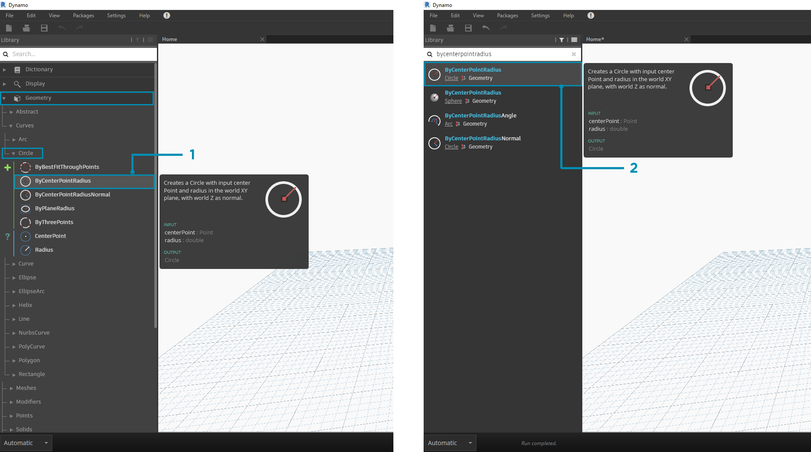
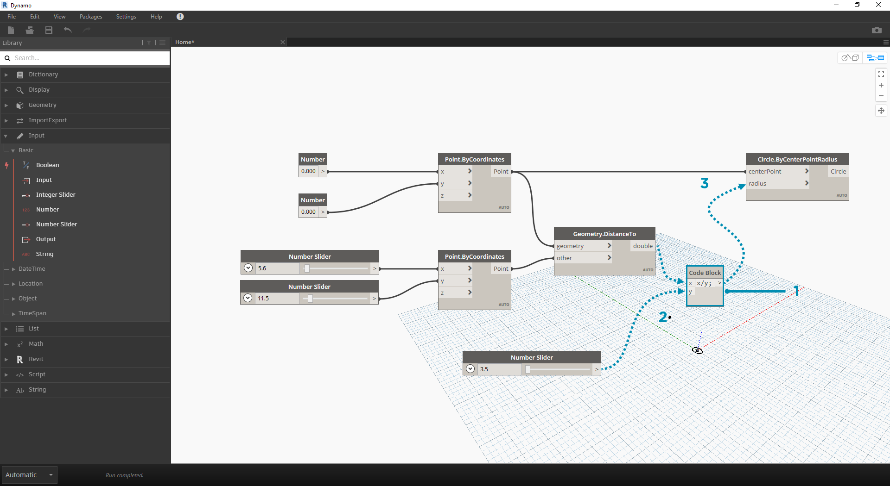

入門
現在，我們已熟悉介面配置與導覽工作區，下一步將瞭解在 Dynamo 中製作圖表的典型工作流程。我們先建立動態調整大小的圓，然後建立具有不同半徑的圓陣列。
定義目標和關係
向 Dynamo 工作區加入項目之前，我們需要透徹瞭解將嘗試實現哪些目標以及存在哪些重要關係，這一點很關鍵。請記住，只要連接兩個節點，就會在這兩個節點之間建立明確連結，我們稍後可以變更資料的流動，但是一旦連接，就已經確立該關係。在本練習中，我們希望建立圓 (目標)，其半徑輸入由距附近點的距離定義 (關係)。

定義距離式關係的點通常稱為「牽引點」。在此，距牽引點的距離將用於指定圓的大小。
加入節點至工作區
現在，我們已草繪目標與關係，可以開始建立圖表。我們需要節點展示 Dynamo 將執行的動作序列。我們知道將嘗試建立圓，接下來先找到執行該作業的節點。使用「搜尋」欄位或在資源庫中瀏覽，我們會發現可以採用多種方式建立圓。

- 瀏覽至 Geometry > Circle > Circle.ByPointRadius
- 搜尋 >「ByCenterPointRadius...」
接下來在資源庫中按一下 Circle.ByPointRadius 節點，以便將該節點加入至工作區，此作業會將節點加入至工作區的中心。

- 資源庫中的 Circle.ByPointandRadius 節點
- 在資源庫中按一下節點會將其加入至工作區
我們也需要 Point.ByCoordinates、Number Input 與 Number Slider 節點。

- Geometry > Points > Point > Point.ByCoordinates
- Geometry > Geometry > DistanceTo
- Input > Basic > Number
- Input > Basic > Number Slider
使用線連接節點
現在，我們已建立一些節點，需要使用線連接這些節點的連接埠。這些連接將定義資料的流動。

- Number 至 Point.ByCoordinates
- Number Sliders 至 Point.ByCoordinates
- Point.ByCoordinates (2) 至 DistanceTo
- Point.ByCoordinates 與 DistanceTo 至 Circle.ByCenterPointRadius
執行程式
定義程式流動後，只需告知 Dynamo 執行該程式即可。執行程式 (自動執行或在手動模式中按一下「執行」) 後，資料將通過線，我們將在 3D 預覽中看到結果。

- (按一下「執行」) - 如果執行列處於手動模式，我們需要按一下「執行」，以執行圖表
- 節點預覽 - 將滑鼠懸停於節點右下角的方塊上，將為您提供結果的快顯資訊
- 3D 預覽 - 如果任何節點建立幾何圖形，我們會在 3D 預覽中看到。
- 建立節點上的輸出幾何圖形。
加入詳細資料
若程式在工作中，我們會在 3D 預覽中看到通過牽引點的圓。這很好，但我們可能需要加入更多詳圖或更多控制項。接下來調整圓節點的輸入，以便可以校正對半徑的影響。加入另一個 Number Slider 至工作區，然後按兩下工作區的空白區域以加入 Code Block 節點。在 Code Block 中編輯欄位，指定 X/Y。

- Code Block
- DistanceTo 與 Number Slider 至 Code Block
- Code Block 至 Circle.ByCenterPointRadius
提高複雜性
從簡易的內容開始，然後提高複雜性，這是逐步開發程式的有效方式。在建立一個圓後，接下來我們應用程式的強大功能建立多個圓。現在，如果我們不是使用一個中心點，而是使用點的格線，並在產生的資料結構中包含變更，程式將建立多個圓，其中每個圓都具有由距牽引點的校正距離定義的唯一半徑值。

- 加入 Number Sequence 節點，並取代 Point.ByCoordinates 的輸入 - 在 Point.ByCoordinates 上按一下右鍵，然後選取「鑲邊」>「交互參考」
- 在 Point.ByCoordinates 後加入 Flatten 節點。若要完全展平清單，請將
amt輸入保留為預設的-1- 3D 預覽將更新，以顯示圓的格線
透過直接操控進行調整
有時數字操控方法並不合適。現在，您在背景 3D 預覽中導覽時，可以手動推拉點幾何圖形。我們還可以控制由點建構的其他幾何圖形。例如，Sphere.ByCenterPointRadius 也可以進行直接操控。我們可以透過 Point.ByCoordinates 使用一系列 X、Y 與 Z 值控制點的位置。但是，使用直接操控方法，您可以在 3D 預覽導覽模式中手動移動點，以更新滑棒的值。這樣可以更直觀地控制識別點位置的一組離散值。

- 若要使用直接操控，請選取要移動的點的面板，在所選點的上方將顯示箭頭。
- 切換至 3D 預覽導覽模式。

- 將游標懸停在點上方，將顯示 X、Y 與 Z 軸。
- 按一下並拖曳彩色箭頭以移動對應的軸，Number Slider 值將根據手動移動的點而即時更新。

- 請注意，在直接操控之前，只有一個滑棒插入到 Point.ByCoordinates 元件中。在 X 方向手動移動點時，Dynamo 會為 X 輸入自動產生新的 Number Slider。